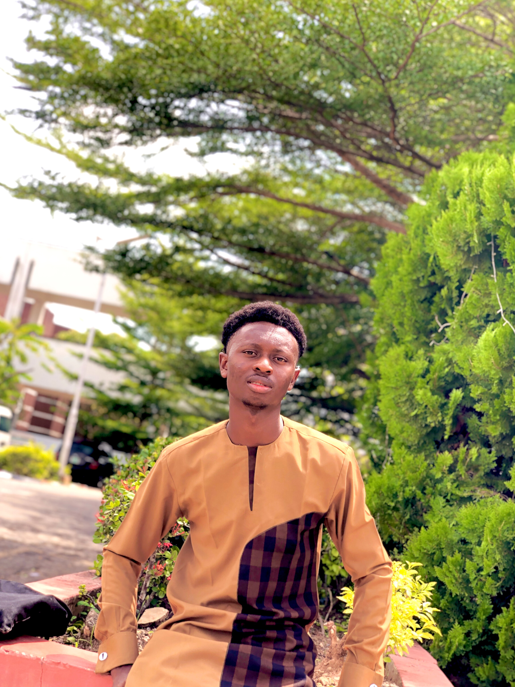

Want to know me?
I am a proud student of Obafemi Awolowo University, currently pursuing my studies in the Chemical Engineering department. I am passionate about exploring new ideas and challenging myself to grow academically and personally.

I have a deep love for coding, where I enjoy creating solutions and building projects that make a difference. Reading is another favorite pastime of mine; it allows me to broaden my knowledge and immerse myself in new perspectives. Music plays a big role in my life too—I enjoy listening to songs that inspire and relax me.
Additionally, I love playing basketball, which keeps me active and teaches me teamwork and discipline.
Together, these activities fuel my passion for learning and personal growth, shaping me into the person I am today.